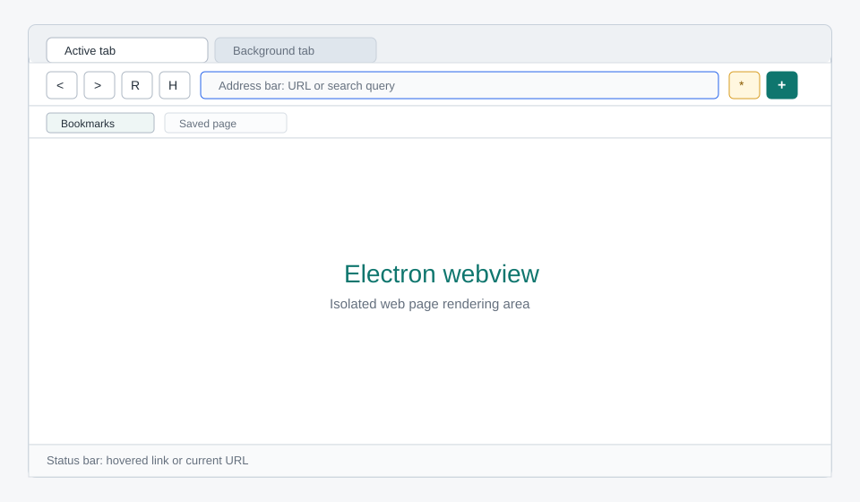

Xây dựng web browser từ đầu theo phong cách course guide.
Một dự án học theo từng bước: tạo desktop browser shell, quản lý tab, chuẩn hóa address bar, cô lập webview, kiểm chứng bằng test/build/audit và ghi tài liệu song ngữ.
Visual Preview
Browser chrome gồm tab strip, address bar, navigation controls, bookmark bar, webview stage và status bar.

The Browser Shell Pattern
Dự án này không viết rendering engine. Chromium render nội dung web, còn code của dự án xây browser shell: UI, navigation, state, webview lifecycle và chính sách an toàn.
THE BROWSER SHELL PATTERN
=========================
User -> Browser Chrome -> Pure State + Webview Controller -> Webview
| | |
| | v
| | Web page process
v v
Toolbar / tabs tests can verify
bookmarks / status URL and tab behavior
Electron main process governs:
+ Window creation
+ Webview attachment policy
+ Permission denial by default
+ Context isolation and Node isolationTab strip, toolbar, address bar, bookmark bar và status bar.
Biến input thành URL thật hoặc DuckDuckGo search URL.
Quản lý tabs, active tab, loading state, history flags và bookmarks.
Renderer không có Node trực tiếp; webview bị khóa Node integration.
Unit tests, typecheck, production build, audit và smoke launch.
Guide song ngữ, Mermaid source và SVG minh họa để học lại từ đầu.
Runtime Architecture
Quick Start
Chạy toàn bộ dự án trên máy local bằng npm.
npm install
npm test
npm run typecheck
npm run build
npm run devLearning Path
Phase 1: FOUNDATION Phase 2: BROWSER LOGIC
==================== ======================
M01 Project scaffold M03 Address normalization
TypeScript + Vite + Electron URL vs search query
M02 Electron process model M04 Tab and bookmark state
main / preload / renderer pure functions + tests
| |
v v
Phase 3: RUNTIME UI Phase 4: SAFETY & DOCS
=================== ======================
M05 Browser chrome M06 Verification and docs
toolbar + tabs + webviews test + typecheck + build
| |
v v
Working desktop browser Bilingual learning guideSyllabus
| Module | Question | Output |
|---|---|---|
| M01 | Làm sao scaffold desktop browser bằng TypeScript? | package.json, tsconfig, Vite configs |
| M02 | Electron chia main/preload/renderer như thế nào? | src/main/main.ts, src/main/preload.ts |
| M03 | Address bar nên hiểu input ra sao? | src/shared/navigation.ts + tests |
| M04 | Tab và bookmark nên được quản lý ở đâu? | src/renderer/browserState.ts + tests |
| M05 | UI điều khiển webview như thế nào? | src/renderer/renderer.ts, HTML, CSS |
| M06 | Khi nào được coi là xong? | test, typecheck, build, audit, launch |
Browser Engineering Roadmap
Sau khi đối chiếu với browser.engineering và repo browserengineering/book, dự án nên phát triển theo hai nhánh: nâng cấp Electron browser shell hiện tại và thêm mini engine lab riêng để học cách browser hoạt động bên trong.
TRACK A: PRODUCT BROWSER SHELL TRACK B: MINI ENGINE LAB
============================== ========================
Session restore URL + HTTP lifecycle
History page Canvas drawing model
Bookmark manager Text layout
Find in page HTML tokenizer/tree
Zoom controls CSS cascade
Download shelf Layout tree
Security indicator Paint commands
Error pages Accessibility concepts
Goal: app dùng tốt hơn Goal: hiểu engine bên trongPersistent tabs, history reducer, history page và tests.
Thêm workflow browser giá trị cao mà chưa cần đổi rendering model.
Package riêng để học URL fetching, HTML parsing, CSS, layout và painting.
Xem roadmap chi tiết: tiếng Việt hoặc English.
Verification Pipeline
npm test
-> navigation + browser state behavior
npm run typecheck
-> TypeScript correctness
npm run build
-> Electron main/preload bundle
-> Renderer production bundle
npm audit --omit=dev
-> Runtime dependency vulnerability check
npm run dev
-> Smoke test: Electron window opens